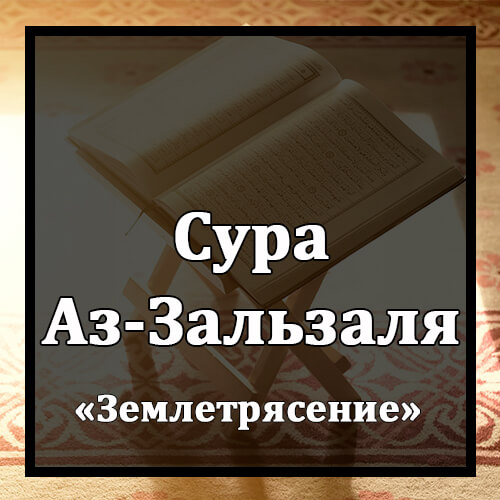

Бисмилляхир-Рахманир-Рахиим
Во имя Аллаха Милостивого и Милосердного!
Иза Зульзилятиль-Арду Зильзаляхаа.
Когда земля содрогнется от сотрясений,
Уа Ахраджатиль-Арду Аскаляхаа.
когда земля извергнет свою ношу,
Уа Каляль-Инсану Ма Ляхаа.
и человек спросит, что же с нею,
Йаума`изин Тухаддису Ахбарахаа.
в тот день она поведает свой рассказ,
Би`анна Раббака Ауха Ляхаа.
потому что Господь твой внушит ей это.
Йаума`изин Йасдурун-Насу Аштатаан Лийурау А`маляхум.
В тот день люди выйдут толпами, чтобы узреть свои деяния.
Фаман Йа`маль Мискаля Зарратин Хайраан Йараах.
Тот, кто сделал добро весом в мельчайшую частицу, увидит его.
Уа Ман Йа`маль Мискаля Зарратин Шарраан Йараах.
И тот, кто сделал зло весом в мельчайшую частицу, увидит его.